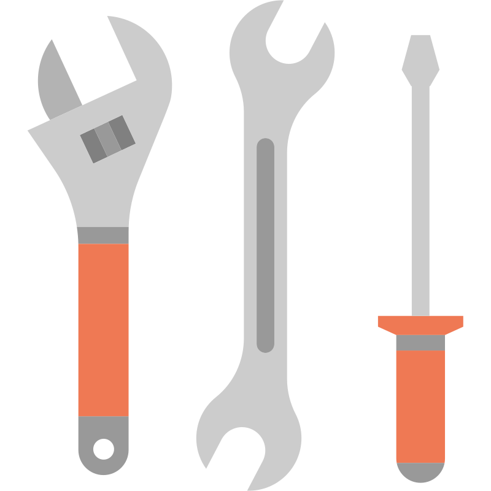
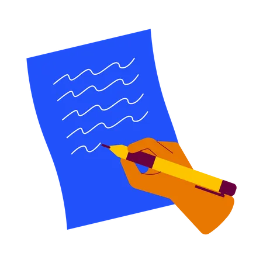
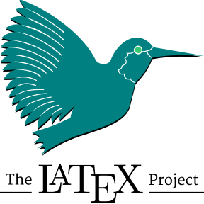
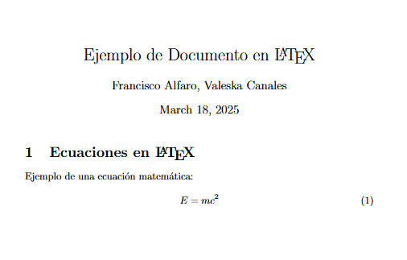
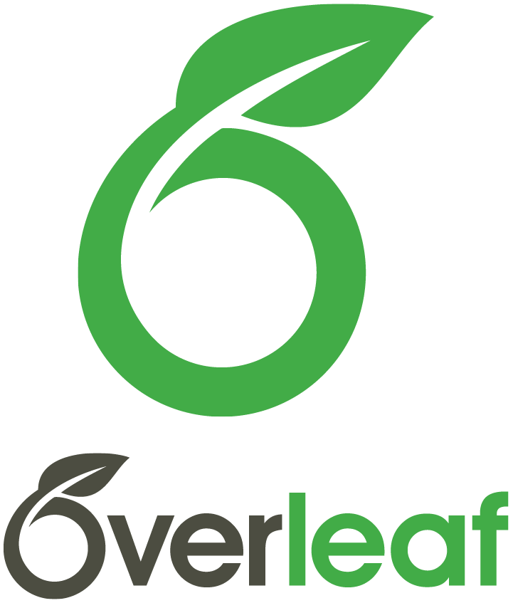
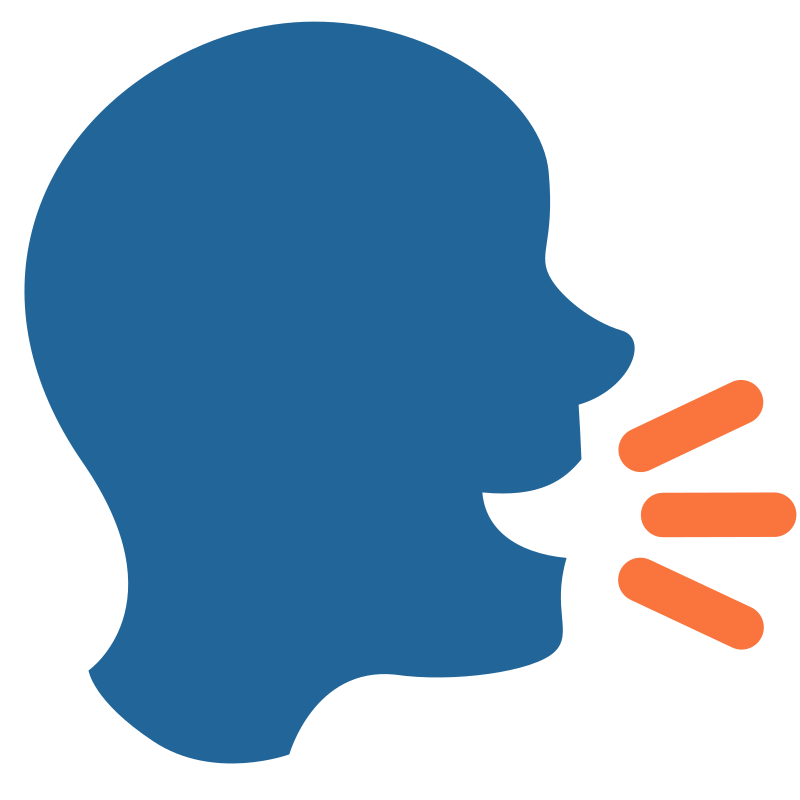
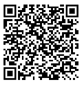

Leer, Escribir y Hablar en la Universidad
Sesión 3
2025-03-25
🎓 Retos Universitarios
🎯 Objetivos

- Enfrentando los desafíos académicos: leer, escribir y hablar.
- Importancia de dominar estas habilidades en la universidad.
- Estrategias clave para mejorar la comprensión y expresión académica.
Sesión 03
Paso 1: Leer con propósito
📚 Lectura Académica
- Los textos académicos son complejos y están escritos para especialistas.
- Artículos y capítulos teóricos son comunes en la universidad.
- Herramientas clave: preparar, abordar y resumir la lectura.
✍️ Puntos Claves
- Propósito:
- ¿Para qué lees? (entender, resumir, debatir).
- Estructura:
- Resumen breve, citas y referencias.
- Consejos:
- Explica con tus palabras.
- Apoya con esquemas o mapas.
- Usa colores o íconos.
- Explica con tus palabras.
✨ Cómo Subrayar un Texto
- Estrategias:
- Define el propósito antes de destacar.
- Lee primero de forma panorámica.
- Destaca solo el 20% del texto con colores útiles.
- Define el propósito antes de destacar.
- Reglas:
- Omitir lo irrelevante.
- Seleccionar lo esencial.
- Generalizar ideas comunes.
- Integrar conceptos conectados.
- Omitir lo irrelevante.
🧠 Enfrentar una Lectura
- Tiempo:
- Lee por bloques de 25-30 min (Pomodoro).
- Pausas cortas para mantener foco.
- Lee por bloques de 25-30 min (Pomodoro).
- Mentalidad:
- No todo se entiende altiro.
- Hazte preguntas mientras lees.
- No todo se entiende altiro.
- Apoyos:
- Espacio tranquilo y sin distracciones.
- Respira y vuelve si te bloqueas.
- Espacio tranquilo y sin distracciones.
📚 Ejemplo Práctico
- 🔗 Explora el siguiente ejemplo aquí:
Sesión 03
Paso 2: Escribir con claridad
✍️ Escritura Académica

- Estilo formal, claro y ordenado.
- Presente en informes, artículos, tesis.
- Basada en evidencia, fuentes y citas.
- Fomenta el pensamiento crítico y la difusión del conocimiento.
🧩 Etapas de la Escritura
- Preparar:
- Lluvia de ideas, esquemas y planificación.
- Redactar:
- Escribe borradores, integra fuentes y organiza ideas.
- Revisar:
- Mejora el texto en varias rondas: claridad, coherencia y estilo.
🎯 Delimita tu Tema
- Infórmate:
- Conoce el contexto y antecedentes.
- Conoce el contexto y antecedentes.
- Enfoca:
- Define el objetivo y las preguntas clave.
- Define el objetivo y las preguntas clave.
- Acota:
- Determina el alcance (tiempo, lugar, población).
- Determina el alcance (tiempo, lugar, población).
- Evalúa:
- Que sea viable y relevante para investigar.
🧱 Estructura de un Artículo
Inicio
¿De qué trata?
→ Resumen, Introducción, Marco teóricoDesarrollo
¿Cómo se investigó y qué se encontró?
→ Metodología, Resultados, DiscusiónCierre
¿Qué significa y qué sigue?
→ Conclusión y Referencias
📝 Documentos Académicos con LaTeX

- ¿Qué es LaTeX?
- Sistema para crear documentos académicos y científicos con formato profesional.
- ¿Por qué usarlo?
- Automatiza referencias y ecuaciones.
- Ofrece mayor control sobre formato y estructura.
- Automatiza referencias y ecuaciones.
📝 Ejemplo de código en LaTeX

📝 Overleaf: LaTeX Online

- ¿Qué es?
- Plataforma en línea para escribir y compilar documentos en LaTeX sin instalación.
- ¿Por qué usarlo?
- Edición colaborativa en tiempo real.
- Integración con GitHub y la nube.
- Compilación y previsualización instantánea.
- Edición colaborativa en tiempo real.
📝 Recursos en línea para LaTeX
- 📖 Aprende LaTeX en minutos: Guía rápida en español.
- 🖊️ Overleaf: Editor LaTeX colaborativo online.
- 📊 Tables Generator: Crea tablas en LaTeX fácilmente.
- 🔢 LaTeX Equation: Generador de ecuaciones LaTeX.
- 🧾 BibTeX Editor: Editor de bibliografía en línea.
📚 Ejemplo Práctico
- 🔗 Explora el siguiente ejemplo aquí:
Sesión 03
Paso 3: Hablar con seguridad
🗣️ Enfrentando Presentaciones Orales

- Preparar: Organiza el contenido y define objetivos claros.
- Diseñar: Estructura la presentación con apoyo visual y contenido relevante.
- Ensayar: Practica para ganar confianza y mejorar el control del espacio y la gestualidad.
🗣️ Cómo Comunicar con la Voz
- Volumen: Proyecta la voz.
- Entonación: Varía el tono.
- Articulación: Habla claro.
- Velocidad: Controla el ritmo.
- Consejo: Usa pausas, evita muletillas.
🧑🏫 Cómo Comunicar con el Cuerpo
- Postura: Erguida y relajada.
- Movimientos: Naturales y controlados.
- Contacto visual: Seguridad y conexión.
- Vestimenta: Profesional y adecuada.
🎬 Cómo Usar un Material de Apoyo
- Función: Visualiza conceptos y datos.
- Consejos: Planifica, evita texto innecesario y asegura visibilidad.
- Uso: No leas, mantén contacto visual.
- Estrategias: Transiciones claras, ideas simples y adapta al entorno.
📚 Ejemplo Práctico
- 🔗 Explora el siguiente ejemplo aquí:
Sesión 03
Conclusiones
💡 Conclusiones
📚 Lectura efectiva: Utilizar estrategias como fichas y mapas conceptuales mejora la comprensión de textos complejos.
✍️ Escritura clara: Planificación, enfoque y revisión son esenciales para textos bien estructurados.
🗣️ Presentación oral: Voz, cuerpo y materiales de apoyo deben trabajar juntos para transmitir el mensaje con claridad.
🚀 Práctica continua: La mejora constante en estas áreas es clave para el éxito académico y profesional.
💡 Referencias
📚 Recursos Para Leer, Escribir Y Hablar En La Universidad:
✍️ Resuros para trabajar con LaTeX:
🎉 ¡Gracias por Participar!

🔗 Nuestro Sitio Web: sethnut.com/resources/.